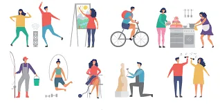

Online Game Addiction
Online Game Addiction: The battle against the Screens Introduction Members: Francis Arevalo - Likes to sing and play video games Contributions; leading the whole group, made the name of the advocacy and the no. 3 Juliana Masagnay - Loves to play sports and musical instruments, contributions are; Significance of the project and its aims and etc. Hans Lapi-an - Likes to write poem at his free time, contribution; solutions to the issue with pictures. Loiue Villaruel - Knows a lot about video games and computer, contribution; the project proposal outlines. Angela Gomez - Does tiktok dances after classes, contribution; the prayer and acknowledgements. Online game addiction is a serious illness that people all around the world is currently having. Even students are being addicted to mobile and computer games. An example would be DOTA 2, Mobile Legends: Bang Bang and many others. Their root causes would be because people need to relax and play some games after a log day at work another cause would be because friends and sometimes family members invites them to play. Then they start getting addicted to it and finally getting attached to the game. But what does the church have to say to this? Well, according to some sources playing video games is not sinful but it does affect lovelife, the attention you give to your loved ones, and sometimes your overall behaviour as a person. You lose opportunities of getting a job and a loving mate. There is also profanity which God which openly disagrees with “Not that which goeth into the mouth defileth a man; but that which cometh out of the mouth, this defileth a man” (Matthew 15:11). The significance of the project aims to educate both youth and elders how much our screens affect our daily life especially about the addiction in online game addiction. A study by Sherry et al (2001) investigating the reasons for playing video and computer games by adolescents and their game priorities on 535 adolescents in age 15-20 in the West USA found that 68% of adolescents had these games as their weekly entertainment. The reasons for playing these games among boys were excitements and challenges and they insisted to win. The study of Carrasco (2001) stated that computers have become a part of man’s life. Almost all the things around us were made by computers with the aid of modern machines. Associated with the computers is the internet where we can find online games. Online games have big impact in the internet right now, its biggest influence mainly focused on teenagers who find online games addictive because of the games mechanism to attract and make its players feel exciting during gameplay. This such games that are popular in the internet right now are design and developed to able to drive away the boredom of teenagers by being able to adapt to the game and focus on the game's goals and more performance to attract its users to spend more time on their screens rather than being out in the internet. This makes online games a big entertainment in the internet. This project aims to educate how the internet especially online games can make someone have an addiction in a matter of minutes or hours, moreover the youth this days must watch out for devices and such parents should not put there children in a such young age in the internet. The danger of the internet for youth are highly large since they are exposed to random contents online that may affect their age perspective at a young age, internet might be available to everyone but i doesn't mean it is for everybody and people putting major risk on their exposure online especially their important details and credentials by posting innocent pictures but can be disguised at something a random person can track and invade someone's privacy. There are other types of solutions to video game addiction. You can store away all gadgets even social media for that matter for two weeks. In the mean time you can exercise with your friend, do stuff together like going to the mall or hiking or even meditation. every single thing that wouldn’t involve you on your computer.
You can also spend some time for your family and loved ones. Put down your gaming console and help your mom cook food or set the table. You can also help grandma with gardening and or feed the dogs with your dad. Lastly, you can sing with all your family members when there is a party or a celebration.
If you are smart enough or just have self-awareness Just stop playing. just notice how long you’ve laid your eyes on a screen hunchbacked, and you will realize that at some point in time you need to stop playing and get out of your room.
You can also slowly reduce your gaming time or maybe find a hobby where it takes time off from video games. For example you can spend 15 minutes of your time in gaming to doing some other things like doing laundry, cleaning your room and play new instruments. Or get a hobby that is suitable to what your gaming preference may be like boy scouts for MMORPG players or Martial Arts for FPS shooter gamers.

You can quit gaming or at least take time off from gaming through online help like Gamequitters. They can help you quit your gaming addiction through specialized methods and helpful advises that certainly help those in need.
Educate - Educate to spread the awareness that online addiction or online game addiction is a big issue to our generation today that needs to be acknoledge more by the elders and the youth themselves. Rehabilitate - Rehabilitate to be able to be able to restore the normal life of the youth or everyone who was part of the online addiction and also to avoid more people from getting addictive to the internet and change the system. Enhance - Enhance to be able to enhance more the strictness of the parents to their children from falling apart in the online game addictions and also to enhance the system and make a better change to the youth.
Prayer and acknowldgements:
Prayer and acknowledgments: Lord our God, Pray for us sinners help us find our way through this addiction. Help us find our way again and please love us and care for us in times of our needs. Thank you O, Lord for every blessing you have given us. In the name of the Father the Son and the Holy Spirit.Amen Thank you for helping me create this project proposal, we couldn’t have done it without you. And thanks for God for giving us the knowledge and wisdom to complete this assignment.May God bless us all and thank you for reading.